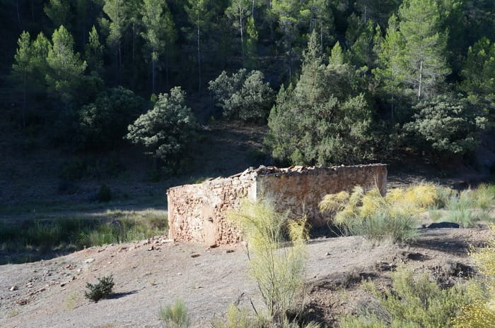

Sendero de Pequeño Recorrido · PR-CU-58
La Ruta del Manco
11 kilómetros de historia. El caminante no se adentra en un camino más: pisa un camino con su propia historia, contextualizada en la posguerra española.

- Longitud
- 11 km
- Duración
- 2 h 30 min
- Circular
- Sí
- Señalización
- Aceptable
Recorrido recomendado: La Pesquera → Fuente de La Olmedilla → El Molinillo → La Pesquera (aunque puede hacerse a la inversa).
Trazado real del PR-CU-58 registrado por pepelik en Wikiloc (6 de noviembre de 2016).
- Inicio / fin
- Fuente de La Olmedilla
- Las Casas del Molinillo
- Las Quebradas del Morrón · 1947
- Casa del Manco · nacimiento de Basiliso
La historia de la ruta
La ruta del Manco, o con más precisión la ruta de los «Maquis», no es un camino más. Los cuerpos de los doce guerrilleros abatidos en La Pesquera atravesaron alguno de los tramos que la ruta marca. Cuando el caminante avanza por el camino de la Olmedilla no puede olvidar en su memoria el recuerdo de los carros llenos de cadáveres masacrados por las balas de la injusticia y la represión. Hombres, algún joven de unos veinte años, con padres, hijos, hermanos, amigos y, sobre todo, personas con dignidad: la dignidad que las circunstancias, el hambre y la represión llevaron a estas personas a la vida en el monte.
En el camino, rodeado de naturaleza, encontramos todos los cultivos que actualmente son el motor económico de La Pesquera: vid, almendro y olivo, junto con tramos de monte y huertas. Hacia mitad de la ruta llegamos a Fuente de La Olmedilla, lugar donde se situaba una base guerrillera y territorio de actuación de la contrapartida con los vecinos de La Pesquera, que cultivaban sus huertos y su propia supervivencia.
El camino nos lleva a la curva en la que situaron los cuerpos, en 1951, de Francisco Serrano Valero «Bienvenido», sobrino del Manco, y Nicolás Martínez Rubio «Enrique», desplazados del lugar real de su muerte a esa parte del camino para disimular a la persona que los había traicionado, enlace del propio pueblo.
El caminante llega a la falda de Las Quebradas del Morrón, lugar próximo al campamento en el que murieron cinco guerrilleros y el enlace del pueblo Andrés Ponce el 30 de enero de 1947, uno de los más duros enfrentamientos de las fuerzas represoras contra la Agrupación Guerrillera de Levante. Avanzando nos encontramos con la casa de las Hoyas, lugar hacia el que se dirigió el ataque, y siguiendo por la Rambla de la Olmedilla, paraje por el que consiguieron escapar dos guerrilleros, uno de ellos Francisco Serrano. Llegamos al camino de Enguídanos y vemos la primera indicación de la casa del Manco; pasamos por las casas del Molinillo, que dan origen al nombre del pueblo. Próxima ya la casa del Manco, donde el 15 de abril de 1908 nació Basiliso Serrano Valero.
Los puntos históricos del recorrido ya han pasado una vez hemos llegado a los tres caminos: la carretera del Pantano es el último tramo que nos queda, lugar de paso del cuerpo del último guerrillero inscrito en las actas de defunción de La Pesquera, extraído de las aguas del río Cabriel el 17 de mayo de 1951. Ese mismo camino de Enguídanos, cuyo fin está próximo, fue lugar de paso de los cuerpos de nueve compañeros más.
Pronto se divisa el pueblo de La Pesquera y el caminante recuerda el poema de Machado: «al andar se hace camino y al volver la vista atrás se ve la senda que nunca se ha de volver a pisar», pero no olvidar.
Sobre el terreno